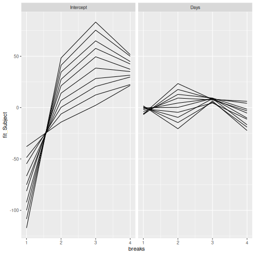

Using merTools to Marginalize Over Random Effect Levels
Jared Knowles and Carl Frederick
Written 2019-05-11 (last updated 2026-05-29)
Source:vignettes/marginal_effects.Rmd
marginal_effects.RmdMarginalizing Random Effects
One of the most common questions about multilevel models is how much influence grouping terms have on the outcome. One way to explore this is to simulate the predicted values of an observation across the distribution of random effects for a specific grouping variable and term. This can be described as “marginalizing” predictions over the distribution of random effects. This allows you to explore the influence of the grouping term and grouping levels on the outcome scale by simulating predictions for simulated values of each observation across the distribution of effect sizes.
The REmargins() function allows you to do this. Here, we
take the example sleepstudy model and marginalize
predictions for all of the random effect terms (Subject:Intercept,
Subject:Days). By default, the function will marginalize over the
quartiles of the expected rank (see expected rank vignette) of
the effect distribution for each term.
fm1 <- lmer(Reaction ~ Days + (Days | Subject), sleepstudy)
mfx <- REmargins(merMod = fm1, newdata = sleepstudy[1:10,])
head(mfx)
#> Reaction Days Subject case grouping_var term breaks original_group_level
#> 1 249.56 0 309 1 Subject Intercept 1 308
#> 2 249.56 0 334 1 Subject Days 1 308
#> 3 249.56 0 350 1 Subject Intercept 2 308
#> 4 249.56 0 330 1 Subject Days 2 308
#> 5 249.56 0 308 1 Subject Intercept 3 308
#> 6 249.56 0 332 1 Subject Days 3 308
#> fit_combined upr_combined lwr_combined fit_Subject upr_Subject lwr_Subject
#> 1 211.9200 250.8137 173.6175 -37.958384 -2.680876 -76.85914
#> 2 245.6775 283.3831 207.7996 -6.238617 25.164606 -46.69958
#> 3 236.9896 275.3616 201.5464 -14.117588 21.020768 -51.19104
#> 4 273.9680 311.3997 236.0823 23.409186 59.360085 -13.18793
#> 5 254.5492 290.2708 218.4986 2.253723 35.755512 -32.79586
#> 6 263.1717 296.7733 225.2313 8.055660 43.478246 -27.57725
#> fit_fixed upr_fixed lwr_fixed
#> 1 252.4671 288.5500 219.3783
#> 2 250.5605 287.2176 215.9889
#> 3 252.2250 290.5297 217.9524
#> 4 253.0412 287.3219 217.2943
#> 5 250.6383 284.8410 216.6404
#> 6 252.7486 286.7932 218.2970The new data frame output from REmargins contains a lot
of information. The first few columns contain the original data passed
to newdata. Each observation in newdata is
identified by a case number, because the function repeats
each observation by the number of random effect terms and number of
breaks to simulate each term over. Then the
grouping_var
Plotting
Finally - you can plot the results marginalization to evaluate the effect of the random effect terms graphically.
ggplot(mfx) + aes(x = breaks, y = fit_Subject, group = case) +
geom_line() +
facet_wrap(~term)